注意事項
このページの範囲
- 維持血液透析を受ける成人の基本的な観察を中心にする
- 別の処方・機器として扱う治療
- 腹膜透析
- 持続的腎代替療法
- 血漿交換
- 訓練と権限の範囲で行う操作
- 穿刺
- 返血
- 回路操作
- アラーム対応
- 透析用カテーテル挿入は医師による中心静脈カテーテル挿入手技として扱う
すぐ応援を呼ぶ変化
- 意識・神経の変化
- 意識低下
- けいれん
- 急な不穏
- 呼吸・循環の変化
- 胸痛
- 呼吸困難
- チアノーゼ
- 重い不整脈
- ショック
- アクセス・回路の異常
- 穿刺針の抜去
- 回路離断
- 止まらない出血
- 発熱・悪寒戦慄と血圧低下
- 次の異常を疑うアラーム・症状
- 血液漏れ
- 空気
- 溶血
- 急なアレルギー反応
腎代替療法の中の透析
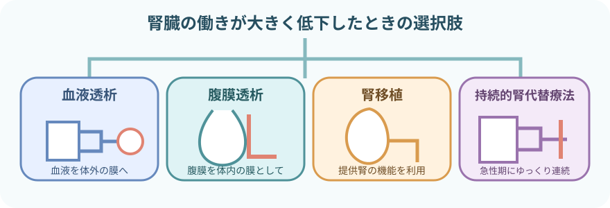
- 血液透析：血液を体外へ取り出し、ダイアライザを通して戻す
- 腹膜透析：腹腔内へ透析液を入れ、腹膜を介して物質と水分を移動させる
- 持続的腎代替療法：循環が不安定な急性期などで、ゆっくり連続して行う方式がある
- 腎移植：提供された腎臓の機能を利用する
- 治療選択は腎機能の数値だけでは決めない。
- 意思決定に含めること
- 全身状態
- 生活
- 予後
- 本人の価値観
- 支援体制
血液透析が代替すること
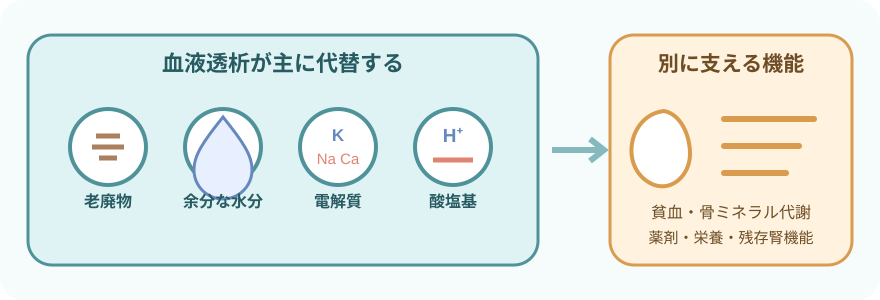
- 血液透析は腎臓の働きの一部を代替する。
- すべてを置き換える治療ではない。
- 尿毒素などの老廃物を除去する
- 余分な水分を除去する
- バランスを調整する電解質の例
- カリウム
- ナトリウム
- カルシウム
- 酸塩基平衡を調整する
- 体液量の調整を通じて血圧管理を助ける
透析装置だけでは代替しない
- エリスロポエチン産生低下に伴う腎性貧血
- 活性型ビタミンDに関わる骨・ミネラル代謝
- 残存腎機能と尿量
- 腎不全の原因疾患や心血管合併症
血液透析の流れ
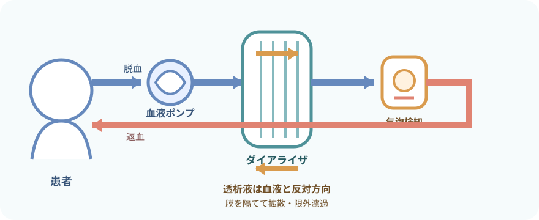
- 拡散：濃度差を利用して、尿毒素や電解質を移動させる
- 限外濾過：圧力差を利用して、余分な水分を除去する
- 抗凝固：体外回路内で血液が凝固しないようにする
- 機器が監視する対象の例
- 圧
- 気泡
- 血液漏れ
- 温度
- 透析液
- 処方で決まること
- 血流量
- 透析液流量
- 除水量
- 抗凝固薬
- 治療時間
- 一般的な値を患者へ一律に当てはめない。
バスキュラーアクセス

- アクセスの種類で管理の重点が変わる。
- 図は血管とアクセスのつながりを示す模式図で、実際の位置・縮尺・穿刺経路を示すものではない。
- 自己血管内シャント（AVF）：動脈と静脈を吻合し、静脈を発達させる
- 人工血管内シャント（AVG）：人工血管で動脈と静脈をつなぐ
- 透析用中心静脈カテーテル：短期間で使用できるが、血流感染への警戒が特に重要
- その他：動脈表在化など、患者ごとのアクセスがある
- アクセス選択は「全員にAVF」ではない。
- アクセス選択で考えること
- 血管
- 心機能
- 予想される治療期間
- 穿刺
- 生活
- 合併症
患者ごとに個別に決める。
透析前の観察
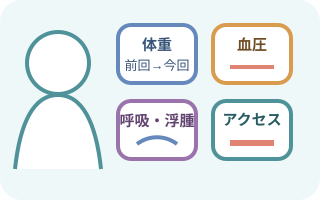
今日は何を、どれだけ動かす治療か
- 体重
- 前回終了時
- 今回開始時
- 体重増加量
- 目標体重
- 循環
- 血圧
- 脈拍
- 不整脈
- 起立時症状
- 呼吸
- SpO₂
- 呼吸困難
- 咳
- 肺うっ血を疑う所見
- 水分
- 浮腫
- 頸静脈
- 口渇
- 尿量
- 飲水・食事
- 全身
- 体温
- 意識
- 疼痛
- 倦怠感
- 転倒リスク
- アクセス
- 視診
- 触診
- 聴診
- 前回の止血時間
- 検査
- 電解質
- 尿素窒素
- クレアチニン
- 血算
- 治療
- 透析処方
- 抗凝固
- 内服・注射
- 食事
- 検査予定
目標体重（ドライウェイト）は固定値ではない
- 目標体重の評価で合わせる変化
- 浮腫
- 呼吸
- 血圧
- 食欲
- 筋肉量
- 残存尿量
- 目標体重の見直しが必要になる状況の例
- 入院
- 感染
- 栄養状態の変化
- 切断
- 妊娠
- 単に目標体重へ合わせるため、症状を無視して除水しない
シャントは「見る・触る・聴く」
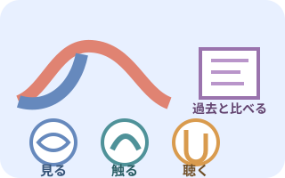
一つの音だけで正常・異常を決めない
- 見る
- 発赤
- 腫脹
- 熱感
- 血腫
- 瘤
- 皮膚
- 出血
- 左右差
- 触る
- スリルの範囲と変化
- 張り
- 硬さ
- 圧格差
- 冷感
- 疼痛
- 聴く
- 音の強弱
- 連続性・拍動性
- 高低
- 途中での変化
- 透析中
- 得られる血流量
- 動・静脈圧
- 再循環を疑う変化
- 透析後
- 止血時間
- 後出血
- 末梢循環
- しびれ
- アクセス肢で原則避けること
- 血圧測定
- 採血
- 末梢静脈路
- アクセス肢の圧迫を避ける
- 腕時計
- きつい衣類
- 長時間の圧迫
- アクセス肢を下にした睡眠
- すぐに報告する変化
- スリル消失
- 急な変化
- 冷感
- 疼痛
- 手指色調変化
- アクセスマップと院内手順に従う事項
- 穿刺位置
- 方向
- 間隔
- ローテーション
透析中の観察
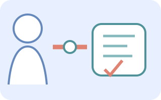
開始直後：接続と急な反応を見る- 開始直後の確認
- 本人確認
- 処方
- アクセス
- 穿刺・接続
- 回路
- クランプ
- 抗凝固
- 開始直後に観察する変化
- 血圧低下
- アレルギー
- 出血
- 疼痛
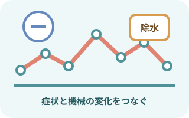
治療中：症状と機械の変化をつなぐ経時的に観察- 血圧・脈拍
- 意識
- 呼吸
- 除水進行
- アクセス
- 動静脈圧
- 回路の色・凝血
- アラーム
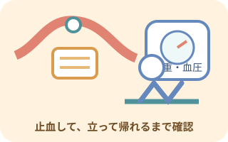
終了時：止血と離床まで確認終了時の確認- 返血
- 抜針
- 止血
- アクセス
- 血圧
- 体重
- 症状
起立・歩行時のふらつきや転倒を防ぐ。
よくみる症状
- 気分・循環の変化
- あくび
- 気分不良
- 悪心
- 嘔吐
- 冷汗
- めまい
- 血圧低下
- けいれん・痛み
- 筋けいれん
- 腹痛
- 胸痛
- 背部痛
- 頭痛
- 呼吸・循環
- 呼吸困難
- 咳
- SpO₂低下
- 不整脈
- 穿刺部
- 穿刺部痛
- 腫脹
- 血腫
- 漏血
- 針位置の変化
- 回路・表示
- 回路内凝血
- 静脈圧・動脈圧の変化
- 血液漏れアラーム
症状から考える透析中の変化
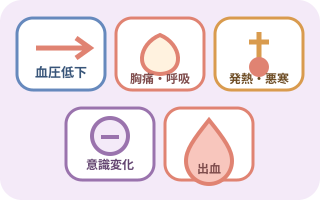
一つの症状を一つの原因に決めない
- 血圧低下で考える要因
- 除水
- 薬剤
- 食事
- 心機能
- 不整脈
- 出血
- 感染
- 胸痛・呼吸困難で考える要因
- 心筋虚血
- 肺うっ血
- 不整脈
- 空気
- 溶血
- アレルギー
- 発熱・悪寒で考える要因
- アクセス感染
- 血流感染
- 透析液・回路関連反応
- 頭痛・悪心・意識変化で考える要因
- 血圧
- 電解質
- 血糖
- 不均衡症候群
- 脳血管障害
- 出血で考える要因
- 穿刺部
- 回路離断
- 抗凝固
- 凝固異常
不均衡症候群
- 透析導入時や高度な尿毒症で、急な溶質変化により起こりやすい
- 不均衡症候群でみられる症状の例
- 頭痛
- 悪心
- 落ち着かなさ
- 意識変化
- けいれん
- 別の原因も除外しない
- 脳卒中
- 低血糖
- 低酸素
- 電解質異常
原因を決めつけず、すぐ報告する。
- 下記の急変時対応は原因により異なる。原因により異なる急変時対応
- ポンプ
- クランプ
- 返血
- 回路処理
- 施設の緊急手順に従い、返血してよい状況かを自己判断しない。
透析用カテーテルの管理
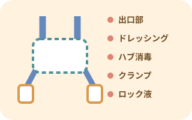
接続のたびに感染と失血を防ぐ
- 感染徴候の確認
- 発熱
- 悪寒
- 出口部の発赤
- 出口部の疼痛
- 出口部の腫脹
- 出口部の排液
- ドレッシングの確認
- 湿潤
- 汚染
- 剥がれ
- 固定
- 位置
- 接続・離脱・ドレッシング交換は手指衛生と無菌操作を守る
- ハブは毎回、指定された方法と接触時間で消毒する
- 透析以外の採血・輸液へ使うかは、緊急性と院内方針を確認する
- クランプ開放やキャップ外れによる失血・空気流入を防ぐ
ロック液はカテーテルごとに確認する
- ロック前の確認
- カテーテルごとの内腔容量
- 製品表示
- 処方
- 院内手順に従うロック液の扱い
- 薬剤
- 濃度
- 注入量
- 使用前の吸引・除去方法
- 「ヘパリン原液を注入」をすべてのカテーテルへ共通する手順にしない
- 塗布剤もカテーテル材質との適合性を確認する
カテーテル挿入で従うこと
- 中心静脈カテーテルの安全手順
- 製品別指示
- 実施者の訓練・権限
透析後の観察と生活
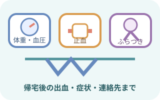
治療終了ではなく、安全に戻るまで
- 終了時体重と目標体重との差
- 透析後の循環
- 血圧
- 脈拍
- 不整脈
- 起立時のめまい
- 透析後の全身状態
- 呼吸
- 浮腫
- 筋けいれん
- 疲労
- 頭痛
- 悪心
- 透析後の穿刺部
- 止血
- 後出血
- 血腫
- スリル
- 帰宅・移動
- 帰宅・移動方法
- 転倒リスク
- 次回までの連絡方法
- 水分・塩分の調整で考えること
- 尿量
- 心機能
- 透析処方
- 体重増加
患者ごとに個別に決める。
- 管理栄養士と調整する栄養項目
- カリウム
- リン
- たんぱく質
検査値と栄養状態をもとに調整する。
- 薬剤の確認
- 透析で除去されるか
- 透析前後の投与時刻
- 血圧・血糖への影響
- アクセスは毎日見る・触る連絡する変化
- 出血
- スリル消失
- 発赤
- 疼痛
- 冷感
報告・記録
記録すること
- 治療の記録
- 開始・終了時刻
- 治療方式
- アクセス
- 処方からの変更
- 開始前・中・後の記録
- 体重
- 血圧
- 脈拍
- 体温
- 呼吸
- 症状
- 除水・水分の記録
- 除水目標
- 実除水量
- 終了時体重
- 残存尿量に関する情報
- アクセスの記録
- 視診
- 触診
- 聴診
- 穿刺
- 止血
- カテーテル所見
- 薬剤・検査の記録
- 抗凝固薬
- 透析中の投薬
- 透析中の輸血
- 透析中の検査
- 異常と対応の記録
- アラーム
- 回路・機器の異常
- 対応
- 医師への報告
- 生活支援・申し送り
- 患者の訴え
- セルフケア
- 指導
- 次回へ引き継ぐ内容